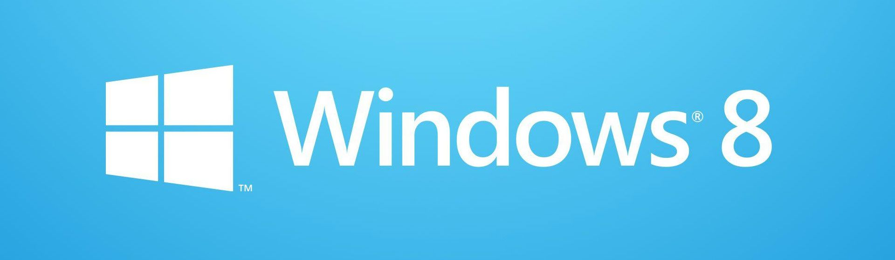

O Windows 8 é um sistema operacional da Microsoft lançado em 2012. Ele foi projetado para ser uma atualização significativa do Windows 7, com um novo design e recursos adicionais para suportar dispositivos de tela sensível ao toque. O Windows 8 apresentou uma interface de usuário completamente redesenhada, conhecida como "Metro", com ícones maiores e uma tela inicial personalizável com blocos dinâmicos.
Uma das principais novidades do Windows 8 foi a adição da Windows Store, que permitia aos usuários baixar e instalar aplicativos diretamente em seus computadores. Além disso, o Windows 8 introduziu o suporte a gestos de toque, como deslizar, beliscar e apertar, permitindo uma interação mais intuitiva com dispositivos de tela sensível ao toque.
Apesar de suas inovações, o Windows 8 recebeu críticas por sua interface de usuário confusa e difícil de navegar em computadores que não eram de tela sensível ao toque. Ele também enfrentou críticas por remover o botão Iniciar clássico, que havia sido uma característica do Windows desde o Windows 95. Em resposta a essas críticas, a Microsoft lançou uma atualização gratuita, o Windows 8.1, que reintroduziu o botão Iniciar e fez outras melhorias na interface de usuário.